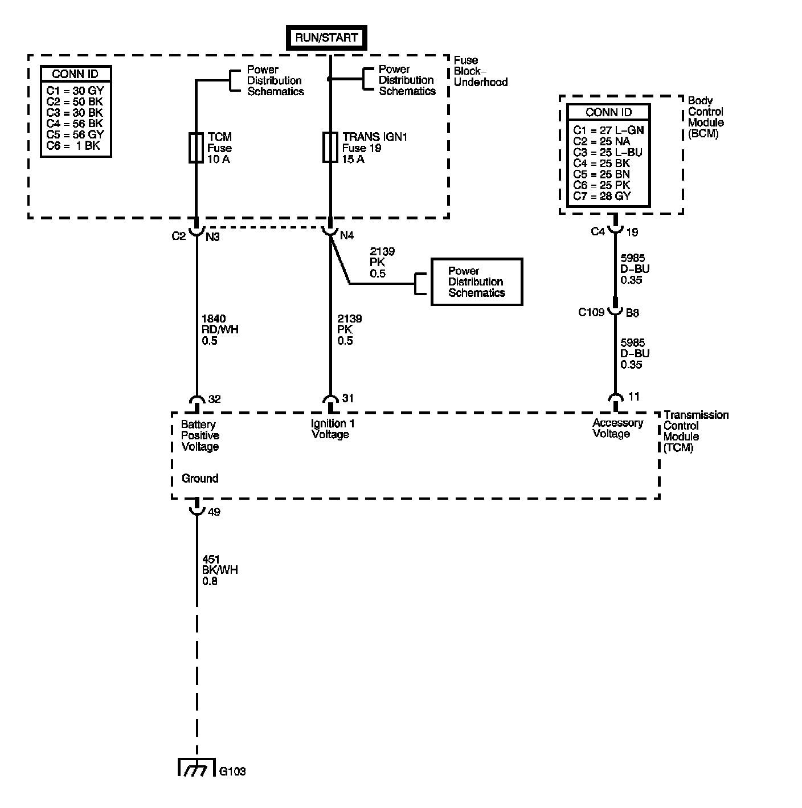

4L60-E / 4L65-E / 4L70-E Automatic Transmission
DTC P0563

Circuit Description
The transmission control module (TCM) continuously monitors the system voltage on the ignition 1 and the battery voltage circuits. Higher than normal voltage may cause the solenoids inside the transmission to operate improperly or damage solid-state components inside the TCM.
When the TCM detects high voltage, DTC P0563 sets. DTC P0563 is a type C DTC.
DTC Descriptor
This diagnostic procedure supports the following DTC:
DTC P0563 System Voltage High
Conditions for Running The DTC
The ignition is ON.
Conditions for Setting The DTC
The TCM detects system voltage 18 volts or greater for 10 seconds.
Action Taken When the DTC Sets
^ The TCM does not request the engine control module (ECM) to illuminate the malfunction indicator lamp (MIL).
^ The TCM records the operating conditions when the Conditions for Setting the DTC are met. The TCM records this information as a Failure Record.
^ The TCM stores DTC P0563 in TCM history.
Conditions for Clearing the DTC
^ The TCM clears the DTC from TCM history if the vehicle completes 40 warm-up cycles without a non-emission related diagnostic fault occurring.
^ A scan tool can clear the DTC.
Diagnostic Aids
^ Observe the driver information center (DIC) messaging that would indicate the electrical system requires service.
^ Use the scan tool in order to inspect all other modules for voltage related DTCs.
^ Running the engine with a battery charger attached may cause DTC P0563 to set.
- Inspect the charging circuit for high resistance.
- Inspect the vehicle battery for open or sulfated cells.
Test Description
The numbers below refer to the step numbers on the diagnostic table.
4. This step tests the charging system voltage with a minimal load.
5. This step obtains the ignition voltage measurement reported by the TCM.